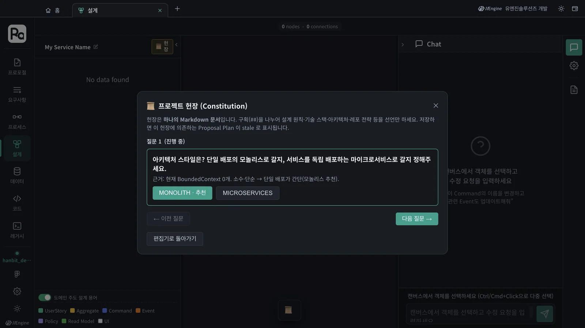
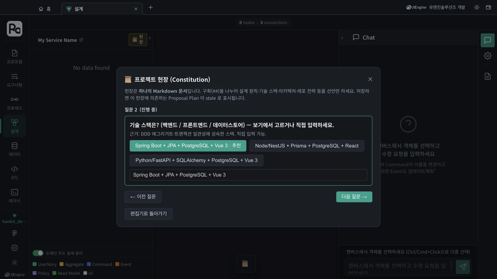
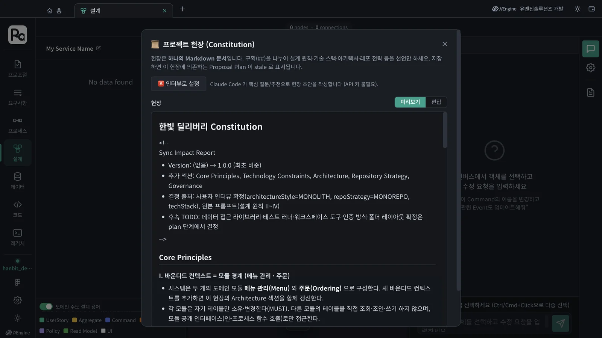

계획을 세우기 전에 이 프로젝트의 설계 원칙 · 기술 스택 · 아키텍처 스타일 · 레포 전략을 한 번 정합니다. Claude Code가 프로포절을 읽고 질문과 추천을 내면 답만 고르면 되고, 그 답으로 헌장(Constitution) 문서가 만들어집니다.
왜 헌장인가#
같은 「주문」 애그리거트도 Spring Boot로 만들지 Node.js로 만들지, 서비스를 나눌지 하나로 둘지에 따라 계획이 완전히 달라집니다. 그런 결정을 프로포절마다 다시 하면 프로포절끼리 서로 다른 구조를 만들어 버립니다. 헌장은 이런 결정을 프로젝트에 한 번 적어 두는 문서입니다. 이후 모든 프로포절의 계획(5장)과 구현(6장)이 헌장을 따르고, 계획의 결정마다 「헌장의 어느 구절에서 나왔는지」가 표시됩니다.
헌장은 Markdown 문서 하나입니다. 구획(##)마다 선언만 적습니다.
| 구획 | 담는 것 |
|---|---|
| Core Principles | 설계 원칙. 반드시(MUST), 바꿀 수 없음(NON-NEGOTIABLE) 같은 강도와 근거 |
| Technology Constraints | 언어·프레임워크·데이터스토어 |
| Architecture | 모놀리스/마이크로서비스, 모듈과 의존 방향, 계층 |
| Repository Strategy | 모노레포/멀티레포, 폴더 배치 |
| Governance | 개정 절차와 버전 정책 |
따라 하기 1 — 인터뷰로 헌장 만들기#
헌장이 없는 프로젝트에서 프로포절의 Plan을 만들려고 하면 「Constitution 작성이 필요합니다」가 나오고 인터뷰가 열립니다.
- 프로포절 탭에서
PRO-001을 열고 Plan 칸 → Plan 단계로 진행 → → Plan 생성을 누릅니다. - 「프로젝트 헌장(Constitution)」 창이 뜨고, Claude Code가 먼저 이 프로포절을 분석합니다(「제안 PRO-001 — BoundedContext 2개: 메뉴 관리, 주문」).
- 질문이 하나씩 나옵니다. 질문 밑의 근거가 Claude Code의 추천 이유입니다. 보기를 고르거나 직접 써서 다음 질문 →을 누릅니다.
- 마지막 질문에서 ✓ 헌장 생성을 누릅니다. 헌장이 저장되고 Plan 생성이 저절로 이어집니다(5장).

이 튜토리얼에서는 질문이 두 개였습니다.
| 질문 | 근거(추천 이유) | 고른 답 |
|---|---|---|
| 아키텍처 스타일 | 바운디드 컨텍스트가 적고 단순 → 단일 배포가 간단 | MONOLITH (추천) |
| 기술 스택 (백엔드 / 프론트엔드 / 데이터스토어) | DDD 애그리거트·트랜잭션 일관성에 성숙한 스택 | 직접 입력: TypeScript(Node.js, Express) / React / SQLite |

추천을 따르지 않아도 됩니다
기술 스택의 추천은 Spring Boot였지만, 이 튜토리얼은 구현을 빨리 돌려 보려고 Node.js와 SQLite를 직접 썼습니다. 직접 쓴 답도 헌장에 「사용자 인터뷰 확정」으로 적힙니다. 질문의 수와 보기는 프로포절에 따라 달라집니다.
따라 하기 2 — 헌장 읽기#
헌장은 홈의 프로젝트 헌장 카드(또는 설계 탭 네비게이터의 「헌장」 단추)로 언제든 엽니다.

두 질문에 답했을 뿐인데, Claude Code는 프로포절의 전략 설계를 읽어 원칙 일곱 개를 세웠습니다.
| 원칙 | 요지 |
|---|---|
| I. 바운디드 컨텍스트 = 모듈 경계 | 메뉴 관리(Menu)와 주문(Ordering) 두 모듈. 모듈은 자기 테이블만 쓰고, 다른 모듈은 공개 인터페이스로만 부른다 |
| II. 주문 상태 전이는 도메인이 강제한다 (NON-NEGOTIABLE) | 접수대기 → 접수됨 / 접수대기 → 취소됨. 고객 취소는 접수대기에서만. 취소와 접수가 겹치면 UPDATE … WHERE status = 'PLACED' 로 하나만 성공 |
| III. 메뉴 상태가 주문 가능성을 결정한다 | 품절 메뉴 주문은 서버가 거부. 주문 항목은 주문 시점의 메뉴명·단가를 스냅샷으로 |
| IV. 역할 분리 | 사장님은 자기 가게만, 고객은 자기 주문만. 권한 검사는 서버에서 |
| V. 타입 안전과 계약 우선 | TypeScript strict, 요청/응답 타입은 한 곳에서 정의해 공유 |
| VI. 테스트로 규칙을 고정한다 | 위 불변식마다 자동화 테스트(MUST) |
| VII. 단순성(YAGNI) | 요구되지 않은 인프라(메시지 브로커 등)를 들이지 않는다 |
그 밖에 Technology Constraints(Express · React · SQLite, WAL 모드, 마이그레이션 스크립트), Architecture(모듈러 모놀리스, 의존 방향 Ordering → Menu), Repository Strategy(모노레포 backend/ · frontend/ · shared/), Governance(SemVer 개정 정책)가 적혔습니다.
헌장을 고치면
편집으로 바꿔 직접 고치거나 인터뷰로 설정으로 다시 인터뷰합니다. 헌장을 저장하면 이 헌장으로 세운 계획들이 「오래됨(stale)」으로 표시되고, 다시 계획을 세우라고 안내합니다.
확인할 것#
- 홈의 「프로젝트 헌장」 카드로 연 편집기에
한빛 딜리버리 Constitution이 있다. - Technology Constraints 표에 인터뷰에서 고른 스택이 「사용자 인터뷰 확정」으로 적혀 있다.
확인 문제#
- 헌장은 프로포절마다 만드나요, 프로젝트에 하나인가요?
- 원칙 II에 붙은 NON-NEGOTIABLE은 무슨 뜻일까요?
- 헌장을 고친 뒤에는 무엇을 해야 하나요?
정답
- 프로젝트에 하나입니다(바운디드 컨텍스트별 덧붙임은 할 수 있습니다). 모든 프로포절의 계획이 이 헌장을 따릅니다.
- 바꿀 수 없는 원칙입니다. 바운디드 컨텍스트별 덧붙임으로도 덮어쓸 수 없습니다.
- 그 헌장에 기대던 계획이 「오래됨」으로 표시되므로, 해당 프로포절의 Plan을 다시 생성해 확정합니다.